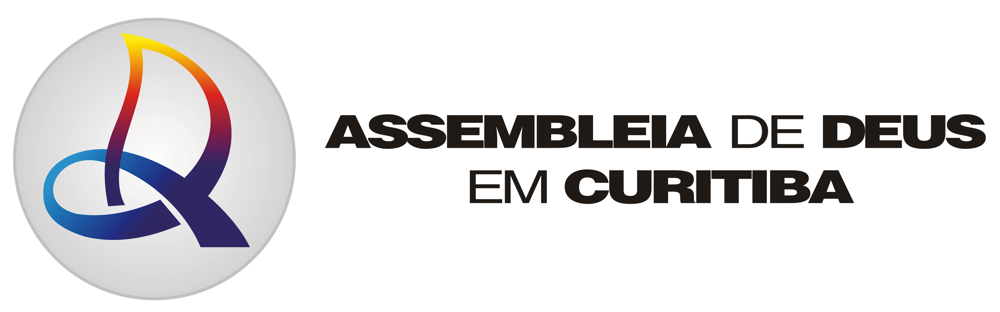

PLANEJAMENTO 2026
Assembleia de Deus em Curitiba · Gestão 2026/2027
10 REGIONAIS
1 VISÃO
ATÉ QUE TODOS OUÇAM
Território · Juventude · Expansão
Liderança UMADC 2026/2027
✝
Pastor Presidente IEADC
Pr. Wagner Gaby
🎯
Coordenador Geral UMADC
Pr. Rogério Marchiore
①
1º Vice Coordenador
Ev. Vinicius de Paula
②
2º Vice Coordenador
Coop. Everton Rodrigues
Selecione a Regional